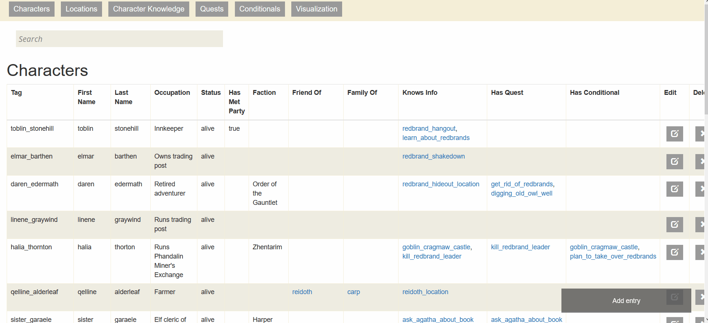

Several visualizations of paths through the story and lists of characters, created in MermaidJS
Try it out

An interactive version of the story flowchart that can be added to and edited, created in TiddlyWiki
Try it out